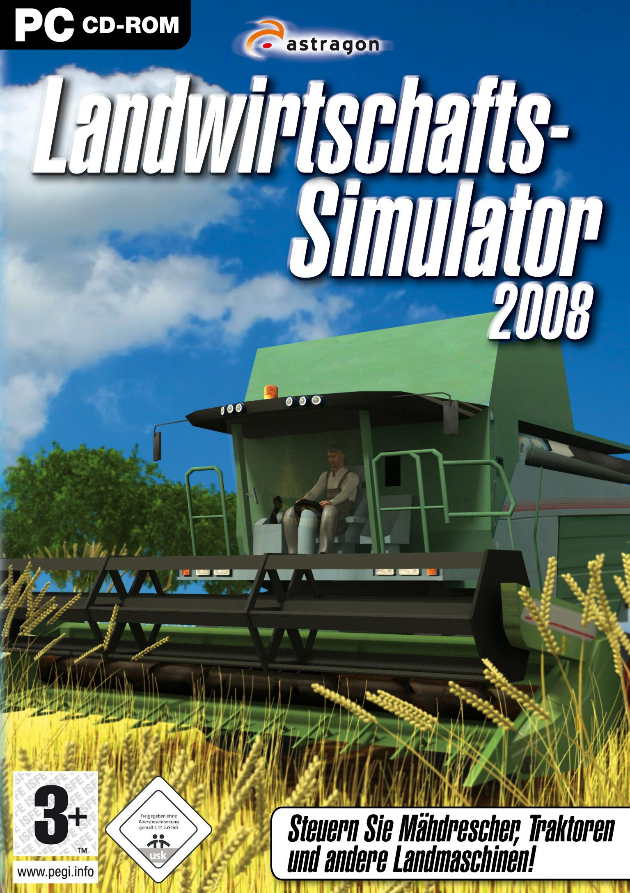

The Farming Simulation Game by Giants Software
How it Started
In 2008, Giants released the first edition, Farming Simulator 2008 on PC only. AKA Landwirtschafts-Simulator 2008, (German) the game consisted of two tractors and two harvesters. The only brand in the game was Fendt. There was only one crop to be harvested: Wheat. The game was very simple at the beginning, but would grow over time.

Many Brands were added throughout the years. One is Case IH in 2013. Another is John Deere in 2019. Another is Versatile in 2022. The manufacturers are getting really good advertising and more keep coming. One notable is Mack Trucks which was a big surprise for the community.